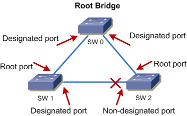

Čo je redundancia v sietiach?
Redundancia v sieti znamená pridávanie záložných komponentov alebo pripojení, aby sa predišlo zlyhaniam a zabezpečila sa vysoká dostupnosť služieb. Vďaka správnej konfigurácii sietí s redundanciou môžete dosiahnuť stabilnejšiu a bezpečnejšiu prevádzku.
Kroky na dosiahnutie redundancie
- Analýza aktuálnej siete a jej kritických miest.
- Výber záložných pripojení a hardvéru.
- Implementácia protokolov pre obnovu pripojení, napríklad OSPF, BGP.
- Monitorovanie a údržba siete.